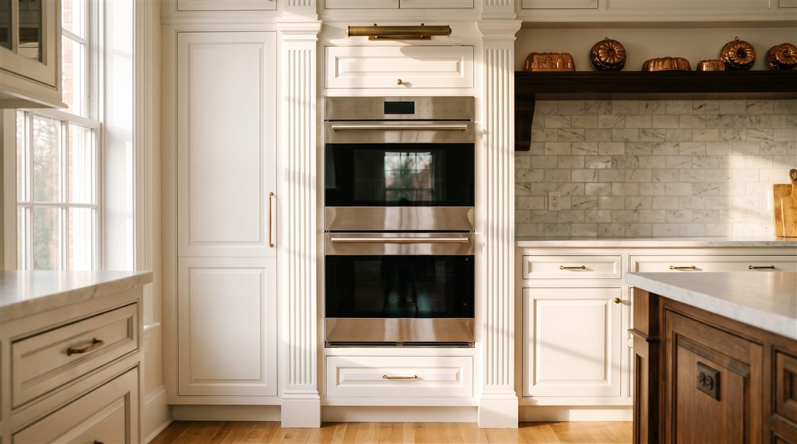

About
Spark circuits, sealed refrigeration, convection cavities, control electronics. One category of machine, studied until it stopped keeping secrets.

A Thermador range is not really purchased as an appliance. It is purchased as the heart of a room, and the room is usually designed around it. The refrigeration columns disappear into walls the architect drew with them already in mind. Equipment woven that deeply into a home deserves service with the same seriousness, and mostly it was not getting any.
That gap started this company. The kitchens with the most invested in them were being serviced by generalists juggling forty brands, dispatchers sending whoever was closest, and repairs that quietly expired within the year. We chose the opposite structure on purpose. A narrow specialty, genuine mastery of it, and every kitchen treated as the custom installation it actually is.
Today the routes stretch from Santa Barbara to Newport Coast, and the growth has come almost entirely by referral. A house manager mentions us to another. A designer writes our number inside a cabinet door. Keeping that reputation is unglamorous work. Returning calls when promised, explaining repairs without jargon, and flagging a weakening part before it strands a dinner party. We consider the reviews a side effect. The habits are the product.
Six commitments, kept on every job without exception.
Training is not a one time event here. Noble techs recertify on current Thermador cooking and refrigeration platforms every single year.
Factory components from authorized sources, with the high turnover parts living on the truck. First visit completions are the direct result.
Three years on parts and labor, written down. If our repair does not hold, the next visit costs you nothing.
Floor runners, shoe covers, padded protection on panels and counters. We clean up, explain the work, and leave the room better than we found it.
$89, quoted upfront, credited in full against any repair you approve. Knowledge should not cost extra.
Every day from 7am to 7pm. Failing refrigeration jumps the queue, because food and time both spoil.
Every tech is a direct Noble employee. Uniformed, background checked, and certified on the current Thermador platforms.
New platforms arrive and the certifications follow. Star Burner systems, Freedom refrigeration, steam ovens, and the electronics behind them all.
The parts that fail most live permanently on every truck. It is the unglamorous secret behind our one visit repairs.
About an hour into the first appointment, the reputation starts making sense. Open daily, 7am to 7pm.
First callers get first pick of the same day windows. The $89 diagnostic credits toward the repair, so the answer itself ends up costing nothing.